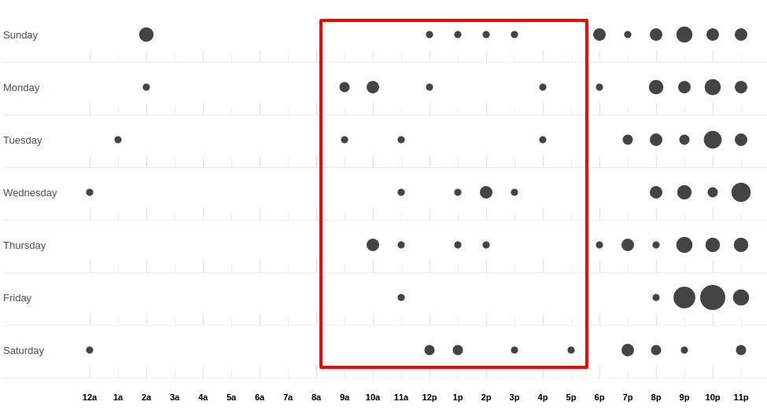
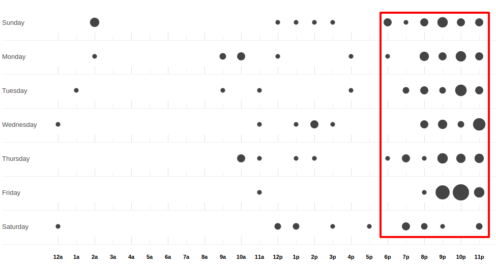

Mirakuru
Czy można robić open source w ramach komercyjnych projektów?
Paweł Wilczyński, Grzegorz Śliwiński
@ Clearcode
Co to robi i dlaczego uprości ci życie?
from mirakuru import SimpleExecutor
process = SimpleExecutor('/usr/local/bin/ntpd')
process.start()
# Do your stuff
process.stop()- SimpleExecutor nie czeka na start procesu
from mirakuru import OutputExecutor
process = OutputExecutor(
'processing.py',
banner='started!'
)
process.start() # Blocks until the process is started
# Do your stuff
process.stop()from mirakuru import TCPExecutor
process = TCPExecutor(
'redis-server',
host='localhost',
port=1234
)
process.start()
# Do your stuff
process.stop()from mirakuru import HTTPExecutor
process = HTTPExecutor(
'web_app.py',
url='http://localhost:6543/status'
)
process.start()
# Do your stuff
process.stop()from mirakuru import HTTPExecutor
proc = HTTPExecutor(
'my_special_process',
url='http://localhost:6543/status'
)
with proc:
# Do your stuff
assert proc.running() is True
assert proc.running() is False"""
:param (str, list) command: command to be run by the subprocess
:param bool shell: same as the `subprocess.Popen` shell definition
:param int timeout: number of seconds to wait for the process to start
or stop. If None or False, wait indefinitely.
:param float sleep: how often to check for start/stop condition
:param int sig_stop: signal used to stop process run by the executor.
default is `signal.SIGTERM`
:param int sig_kill: signal used to kill process run by the executor.
default is `signal.SIGKILL`
"""summon_process
- Lipiec/Sierpień 2013,
- krótko potem zaprzągliśmy do naszych testów
Kontrybuowanie do summon_process
- długi czas reakcji
- testy...
- contextmanager? orchestrated!
- zamiast prostych context managerów, orchestrated, z klasą Orchestration
- Orchestration - to technika służąca rozdieleniu logicznemu zależnych od siebie aplikacji,
coś a'la dyrygent, który zawiaduje procesami wykonując odpowiednie akcje na sekcjach orkiestry
- Każdy, kto musiałby użyć tego podejscia i napisać Orchestratora,
musiałby i tak użyć swojego kontekst managera
- O ile w ogólnym sensie może się przydać, tutaj - zbyt duże narzędzie. Tylko start i stop.
Na sztywno zaszyte w orchestrated.
Forkujemy
- testy
- dokumentacja
- chęć ułożenia api jak chcemy...
rozwój - w pracy
rozwój - w domu

- na początek - euforia - jak najszybciej do releasu
nazwa - mirakuru
- 2 sezon serialu Arrow:
- Główny antagonista - Deathstroke/Slade Wilson (Deadpool - Wade Wilson)
- Pod wpływem mirakuru, Japońskiego serum nadczłowieka z czasów WWII
- skutki mirakuru
- nadludzka siła,
- regenracja...
- ale także agresywność, halucynacje i chęć mordestwa.
- Z tego względu właśnie nazwa wydawała się odpowiednia:
- nadludzka siła, sterowanie zewnętrznymi usługami: baza danych, aplikacja.
- jeśli jednak popełnimy błąd, albo pojawi się jakis problem:
- procesy mogą wyciec,
- możemy wysycić zasoby
czy nazwa jest dobra?
Wspierane wersje, systemy
- python 2.7, 3.3, 3.4, 3.5
- pypy, pypy3
- linux, osx
- niedawno porzuciliśmy wsparcie dla pythona 3.2
- wsparcie dla osx jest częściowe (paweł opowie później)
compat.py & żadnych zależności... ?
import sys
python = sys.executable
if sys.version_info.major == 2:
from httplib import HTTPConnection, HTTPException, OK
from urlparse import urlparse
else:
# In Python 3 httplib is renamed to http.client
from http.client import HTTPConnection, HTTPException, OK
# In Python 3 urlparse is renamed to urllib.parse
from urllib.parse import urlparse- pomysł zaczerpnięty z pyramida
- istnieje six, ale aż takiej logiki nie potrzebowaliśmy
zależności! ale tylko testowe
tests_require = (
'pytest', # tests framework used
'pytest-cov', # coverage reports to verify tests quality
'mock', # tests mocking tool
'python-daemon', # used in test for easy creation of daemons
'pylama==6.4.0', # code linters
)Testy
- py.test!
- coverage
- travis-ci.org
- coveralls.io
- py.test - nasz domyślny wybór jeśli chodzi o framework testowy
- we wszystkich naszych paczkach mierzymy pokrycie kody testami,
co i tak nie chroni nas od błędów
- każdy pull-request jest odpalany na travisie w każdej wersji pythona na linuksie
- dodatkowo w pythonie 3.5 na osx
- coveralls.io - raportuje pokrycie kodu i każdą zmianę na bierząco, również w pull requeście
Styl i jakość kodu
- code review
- konkretne wymagania dotyczące stylu
- opis słowny, czego wymagamy od kodu jest ok, ale pilnowanie w code-review...
- wymagania - docstringi, zgodność z pep8
- w code review nie zawsze wszystko jesteśmy w stanie wyłapać, jeśli chodzi o styl
Lintery? Enter pylama!
- Automatyzuje żmudne zadanie sprawdzania stylu kodowania
- pylama.ini - czarno na bialym spisane wymagania co do stylu kodowania
- pep8, pep257, mccabe, pyflakes - OUT of the box!
- Można powiedzieć, że wprowadza orchestracje linterów
- łatwość pisania pluginów z innymi linterami (pylint, gjslint dla javascript)
- Istnienie pliku konfiguracyjnego pozwala określić jakiś początkowy zakres wymagań i powoli,
pojedynczo wprowadzać kolejne
QuantifiedCode & Landscape
- Automatycznie sprawdzają kod pod wzgledem dobrych praktyk
- QuantifiedCode - 13 smrodków
- Landscape - 1 smrodek, 100% jakości ;)
- Na chwilę obecną obecność obu tych usług traktuję jako eksperyment
- QuantifiedCode - Postanowiłem sprawdzić po wysłuchaniu podcasta "Talk Python To Me" z jednym z twórców.
- Landscape - nawet nie wiem kto podpiął
QuantifiedCode
- Konfigurowalny
- rozszerzalny
- autofix!
- Pozwala wyłączyć niektóre smrodki spośród tych, które będzie sprawdzać, ale również w drugą stronę, pozwala zdefiniować własne.
- posiada zdefiniowane smrodki specjalnie pod wybrane frameworki
- dla niektórych smrodków potrafi sam stworzyć pull request
Requires.io
- obserwuje czy zależności są na czasie
- tworzy pull-requesta, jeśli przypięte są stare
- pozwala to przetestować kod z konkretną wersją jakiejś zależności i automatycznie zostać
poinformowanym o nowej wersji, i łącznie z wynikiem testów (travis-ci) dać informację,
czy nasz kod jest zgodny, czy nie
- będziemy testować z przypinaniem pylamy
Statystyki
- 210 commitów
- 11 wydań
- 8 kontrybutorów
- 19 zamkniętych ticketów
- Python 100.0%
- 100% kodu pokrytego przez testy
- 979 linii kodu
- 789 linii testów
- 1494 pozostałych linii (dokumentacja etc.)
Licencja
GNU LESSER GENERAL PUBLIC LICENSE
Wykorzystanie Lesser GPL dopuszcza korzystanie z biblioteki w programach prawnie zastrzeżonych.
Zastosowanie zwykłej GPL powoduje, że biblioteka jest dostępna tylko dla wolnych programów.
Zastosowanie mirakuru
- pytest-dbfixtures
- testy integracyjne
Problemy
- OSX
- Wyciekanie podprocesów
To the future
- mirakuru jako narzędzie linii komend
$ mirakuru tcp 127.0.0.1 5000 \
-- ./fancy_command.sh
$ mirakuru tcp 127.0.0.1 5000 --timeout=20 \
--sig_stop='SIGKILL' -- ./fancy_command.sh
$ mirakuru http http://127.0.0.1:5000/check \
--shell=ture -- ./fancy_command -a "abc"
$ mirakuru out "has started." \
-- ./fancy_command -a "abc"
$ mirakuru pid /var/fancy_process/run.pid \
--timeout=100 -- ./fancy_command -a "abc"
Inne rozwiązania
- subprocess
- call
- check_call
- check_output
- Popen
- subprocess32 (timeout)
Inne rozwiązania
>>> from easyprocess import EasyProcess
>>> EasyProcess('python --version').call().stderr
u'Python 2.7.11'from spawn_and_check import execute, check_http
process = execute(
'run_some_service --port 8000',
[check_http('http://127.0.0.1:8000')],
timeout=10,
)Biblioteki OpenSource naszego zespołu
- mirakuru
- pytest-dbfixtures
- pytest-repeater
- matchbox
- ianitor